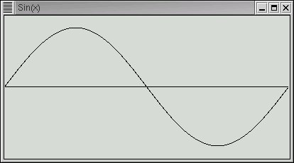
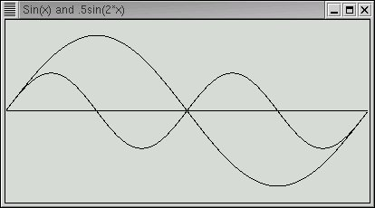
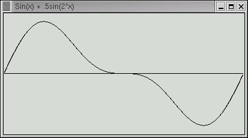
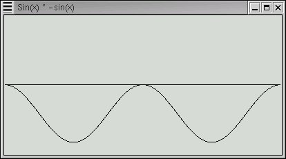
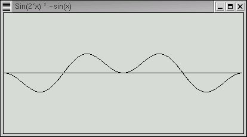
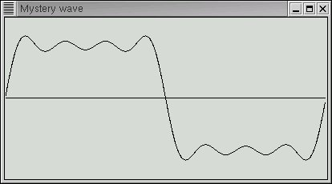
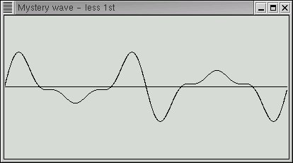
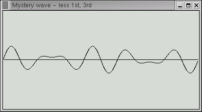
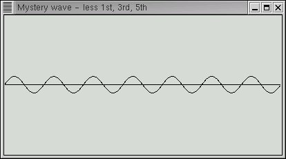
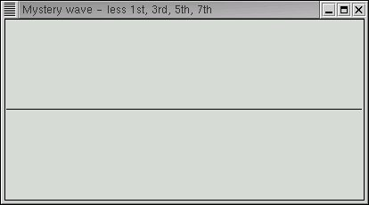

The book "Who is Fourier, a Mathematical Adventure" from the Transnational College of LEX is an excellent and gentle introduction to a wide range of subjects including differential and integral calculus, Fourier Series, and even an analysis of the five vowel sounds used in the Japanese language. This study augments the book by preparing an object class for representing waveforms graphically and also manipulating them. If you can't get a copy of the book but have some background in trig and maybe just a bit of calculus, the material should be easy.
Sound waves
When a tuning fork is struck a sound of a single fixed frequency is emitted as the fork vibrates. If we use a microphone to convert the sound wave to an electrical signal and then display the signal on an oscilloscope the waveform will look the following sine wave.

The horizontal axis represents time and the vertical axis amplitude. An amplitude may represent several things such as the exact position of the tuning fork arm as it vibrates or the compression and decompression of air as the sound travels through it or perhaps the instantaneous voltage of the electical signal generated by the microphone. Each seperate point is also a point in time. The sine wave describes how any of these properties change during a single cycle. If the frequency is 440 cycles per second (440 Hertz) then the time shown above is 1/440 of a second. Only two attributes are needed to describe a sine wave; its frequency and its amplitude.
If you now strike the A above middle C on a (well tuned) piano, you will also get a wave of 440 cycles per second. However it will not sound quite the same as a tuning fork. And it will look quite different on the oscilloscope. And if you play the same note on a violin or trumpet they will sound different yet again.
The reason for the difference in sound is that these more complex instruments produce a sine wave not only at 440 hertz but also at higher frequencies (harmonics) where each frequency is an integer multiple of 440 hertz. To picture this think of a violin string vibrating so that the end points are fixed and the middle of the string vibrates back and forth. That would be the fundamental frequency of, say, 440 hertz. Next think of the center of the string also staying stationary and the points at 1/4 and 3/4 of the string length vibrating back and forth. That vibration would be at 880 hertz because the length of a vibrating string (or part of a string) determines the frequency and the relationship is a linear one. That means is you half the length of the string you will double the frequency. You can divide the string into any number of sections and get a vibration at the corresponding frequency. These vibrations are called standing waves.
Each instrument produces its unique pattern of harmonics and their relative strengths determine the characteristic sound of the instrument.
Now suppose we would like to play music from our computer. One way to do this is to capture a sound wave electrically with a microphone, convert instantaneous voltage values at some fixed rate and store the values for later retrieval. This is exactly how a music CD works. But it takes a lot of storage, as you already may know. About 10 megabytes for each minute of sound.
But a much more compact method exists if the sounds are relatively simple such as notes from trumpet or violin (or even japanese vowels). All we need to know is the base frequency and amplitude of a note, its duration, and the relative amplitudes of each harmonic. Of course, there are an infinite number of harmonics but ones that are beyond the range of human hearing (about 20,000 Hertz) may be ignored since you wouldn't hear them anyway.
The main point of this study is to demonstrate Fourier's method for finding the harmonic amplitudes from a sampled wave.
A Python Class for Waves
Let's start by creating a Python class to store a single cycle of a complex waveform (like a violin note) in the same way a CD stores the information. The data might be gathered by sampling a microphone. One attribute of our class will be an array, or list, of sampled points. With our wave class we will be able to add, multiply, divide, and subtract waves in order to add in (and subtract out) harmonic frequencies. The class will also have a method to plot the wave on the screen.
We'll use just a bit of the Tkinter package to plot the waves. Normally the learning curve for Tkinter is fairly steep but we will be able to accomplish our needs with just a few commands.
Let's look at the definition of the wave class. To see the code in full Click here.
class wave : def __init__ (self, points=400, formula=None) : self.data = [0.0]*points self.points= points if formula : for p in range(points) : x = p*pi*2/points self.data[p] = eval(formula)
When a wave object is instantiated we pass the number of data points that are to be stored for the range 0 to 2*pi and also an optional formula for calculating the data points. The formula is a string (like "sin(x)") that is passed to the Python eval function which calculates the value of each data point. The formula should contain a single variable "x" which will be iterated over the range. Let's look at an example. We'll create a sine wave with 400 data points.
>>> import wave >>> w = wave.wave(formula="sin(x)",points=400) >>> print w.data[0],w.data[100],w.data[200],w.data[300] 0.0 1.0 1.22460635382e-16 -1.0 >>>
Since there are 400 data points, 100 corresponds to pi/2, 200 to pi, and 300 to 3*pi/2. 1.22460635382e-16 is *very* close to zero, in fact we could also write it as .0000000000000000122460635382. The reason it's not exactly zero is due to rounding errors in the floating point calculations.
Next we define the methods to add and multiply waves. By using Pythons magic method __add__ we're able to use the '+' operator directly on two wave objects creating a third objects whose data points are the sum of the corresponding data points in the input waves.
def __add__ (self, other) : target = wave(points=self.points) for i in range(self.points) : target.data[i] = self.data[i] + other.data[i] return target
As you can see, "target" is a new wave object created to hold the sum. It is made with the same number of data points as the source.
The subtract method __sub__ is identical to __add__ with the exception that the '-' operator replaces the '+' operator.
Mutliplication is slightly more complicated because there are two ways it can be done. If a wave is multiplied by a number then each data point is multipled by that number resulting in a wave with the same shape but with a different amplitude. If two waves are multiplied together then the corresponding data points are multiplied together resulting in a quite different wave. We'll use both forms of multiplication.
def __mul__ (self, other) : target = wave(points=self.points) if type(other) == type(5) or type(other) == type(5.0) : for i in range(self.points) : target.data[i] = self.data[i] * other else : for i in range(self.points) : target.data[i] = self.data[i] * other.data[i] return target
The final operation that we need for waves is to integrate them. For those of you without a calculus background, this means finding the area between a curve and the zero line. Where the function values are positive the area is positive and where they are negative, the area is also negative. Integral calculus has rules to compute such areas, but we will do something much simpler. We'll let the computer simply compute the area by finding the average function value in the range 0 to 2*pi and simply multiplying that value by 2*pi. That is just what the following method does.
def integral(self) : ans = 0.0 for pt in self.data : ans = ans+pt return ans*2*pi/self.points
This will introduce some small errors since our waves are sampled at a finite number of data points. The curves are not completely smooth, but sort of "staircasey".
Just Enough Tkinter
Finally, we need to be able to plot our wave to the screen. There are actually several ways to go about this but we'll use the Tkinter package which is fairly straightforward for operations this simple. To use Tkinter, it must be installed on your computer and if you are using Linux the you must be using the X window system.
We will use just a few simple commands to plot our waves with Tkinter. If you can, follow along from the Python interactive prompt.
>>> from Tkinter import * >>> win = Tk()
If all is well, a small window should have popped up on your screen that is framed and 200 pixels in both width and height. The variable "win" is a reference to this window. (Windows users, don't panic. The window will appear a little later.)
The next two commands create a "canvas" tied to the window onto which we may draw lines (and other things as well). Since the canvas is dimensioned 400 pixels wide and high, the window expands when the canvas is "packed" into it.
>>> canvas = Canvas(win,height=400,width=400) >>> canvas.pack()
Finally we create a line from the origin (0,0) in the upper left corner to the center of the canvas (and the window) at (200,200).
>>> canvas.create_line(0,0,200,200)
Now, if you are using Windows you will need one more command before seeing the window on the screen. The window must be "run" with the following
>>> win.mainloop()
This will unfortunately keep your program (or the interactive mode) from proceeding until the window is closed. That means that, unlike the Linux (and other Unix) users, you won't be able to stack several windows on the screen.
That's really all we need to know to build our plot method. Let's look at it now.
def plot (self, title="??", pixHeight=None, maxY=None, others=[]) : if not pixHeight : pixHeight = self.points*2/3 # Pleasant ratio pixWidth = self.points # find max and min data to scale if not maxY : maxY = max (max(self.data), -min(self.data)) offset = pixHeight/2 scale = offset/maxY
This first part determines the scaling factor for the vertical "y" axis. If maxY is supplied the window scales pixHeight to it, actually to twice it's value, half above and half below the zero line. If maxY is not specified, it is determined by the maximum positive (or minimum negative) value in the data points.
Next a window and canvas are created and the zero line is drawn.
... win = Tk() win.title (title) canvas = Canvas(win,width=pixWidth,height=pixHeight) # create zero line canvas.create_line(0,offset,pixWidth,offset) canvas.pack()
Next "plotOne" is called to plot the wave. The parameters "others" may be a list of other waves to plot as well with the same scale factor.
... self.plotOne (canvas, pixWidth, scale, offset) for i in range(len(others)) : others[i].plotOne (canvas, pixWidth, scale, offset) if sys.platform == "win32" : win.mainloop()
Finally the method "plotOne" draws lines between each of the data points scaled to pixels. Notice that the first line drawn is for the second data point when x==1.
def plotOne (self, canvas, pixWidth, scale, offset) : for x in range(pixWidth) : y = offset - self.data[x] * scale if x : canvas.create_line(x-1,yprev,x,y) yprev = y
Complex Waveforms
Let's start making waves and see what they look like. We'll generate a simple sine wave and its first harmonic (twice the frequency) at half the amplitude.
>>> import wave >>> a = wave.wave(formula="sin(x)") # fundamental >>> b = wave.wave(formula=".5*sin(2*x)") # harmonic
Next we'll plot both of them onto the same window.
>>> a.plot(maxY=1.2, pixHeight=200, title="Sin(x) and .5sin(2*x)", others=[b])

Next let's compute and plot the sum of the two simple waves. Notice that since both "a" and "b" are wave objects, their sum, computed by the "__add__" method above is a seperate wave with its own data points.
>>> c = a + b >>> c.plot(maxY=1.5, pixHeight=200, title="Sin(x) + .5sin(2*x)")
Or more consisely.
>>> (a+b).plot(maxY=1.5, pixHeight=200, title="Sin(x) + .5sin(2*x)")
And the result is.

Now it's pretty simple to generate a complex waveform from simple waveforms. Much trickier is to extract the simple waves from the complex. But that is exactly what we would need to do in order to see the pattern of harmonic frequencies that distinguish a violin from a piano or, going back to japanese vowels, the "ah" sound from the "ee" sound.
Fourier provided an ingeneous method for this. To understand it we need to consider the integrals of our simple waves.
>>> print a.integral(), b.integral(), c.integral() -1.143366892e-16 -1.63003354337e-16 -3.61866356668e-17
The integrals are basically zero. But we must expect that since in each wave there is just as much area below the center line as above. The waves are symetrical around the zero line. But supposing we multiply both "a" and "b" by "-sin(x)"
>>> mx = wave.wave(formula="-sin(x)") >>> c = a*mx >>> c.plot(maxY=1.2, pixHeight=200, title="Sin(x) * -sin(x)") >>> print c.integral() -3.14159265359

Notice that for our fundamental frequency this multiplication takes the curve below the centerline and yields an area of -pi. Let's try the same thing for our first harmonic.
>>> mx = wave.wave(formula="-sin(2*x)") >>> c = b*mx >>> c.plot(maxY=1.2, pixHeight=200, title="Sin(2*x) * -sin(x)") >>> print c.integral() -1.74286132071e-16 (basically zero)

We can see that there are still equal areas above and below the center line. You can try this on other harmonics and see that this always holds true. Only the fundamental frequency will yield a non-zero area of -pi times its amplitude.
This leads to the following technique to "remove" first the fundamental frequency followed by the successive harmonics. We multiply the complex wave by "-sin(n*x)" where n is 1,2,3... and then compute the integral of the result. The integral divided by -pi is the amplitude of the nth harmonic. We then form a wave with that amplitude and frequency and subtract it from the complex wave leaving the remaining harmonics. When all of the harmonics have been extracted our complex wave will be reduced to a flat line of zero amplitude. But we will have the necessary information to reconstruct the complex wave anytime we want.
The recombination of simple waves to complex is how music synthesizers work and is also the basis for MIDI music format.
Fourier Analysis of a Mystery Wave
Let's apply the above technique to the following wave form

which we have referenced by the variable "mystery". How we got this wave is not important. It might be captured from a microphone to a wave file. Let's start with the fundamental frequency and integrate its product with "-sin(x)"
>>> d = mystery >>> (d*wave.wave(formula="-sin(x)")).integral() -3.1415926535897931 >>>
The result is -pi which means the amplitude of the fundamental frequency must be one. Let's now subtract that from "d" leaving only the harmonics.
>>> d = d - wave.wave(formula="sin(x)") >>> d.plot(maxY=1.2, pixHeight=200, title="Mystery wave - without fundamental") >>>
The result looks like this

That certainly looks simpler. Let's now try the harmonic at twice the fundamental frequency.
>>> (d*wave.wave(formula="-sin(2*x)")).integral() -7.9727087825085978e-17 >>>
With e-17, this is basically zero. Let's keep going, subtracting out harmonics as we find them.
>>> (d*wave.wave(formula="-sin(3*x)")).integral() -1.0471975511965983 >>> d = d - wave.wave(formula="-1.0471975511965983*sin(3*x)/-pi") >>> d.plot(maxY=1)

>>> (d*wave.wave(formula="-sin(4*x)")).integral() -2.5293858853722756e-17 >>> (d*wave.wave(formula="-sin(5*x)")).integral() -0.62831853071795829 >>> d = d - wave.wave(formula="-0.62831853071795829*sin(5*x)/-pi") >>> d.plot(maxY=1)

>>> (d*wave.wave(formula="-sin(6*x)")).integral() -4.8554263124133835e-17 >>> (d*wave.wave(formula="-sin(7*x)")).integral() -0.44879895051282731 >>> d = d - wave.wave(formula="-0.44879895051282731*sin(7*x)/-pi") >>> d.plot(maxY=1)

As the final plot shows, all harmonics are basically gone.
Our mystery wave was the begining of a square wave with just the first few harmonics. The square has an interesting set of harmonics. Only the odd harmonics are present. Their amplitudes also decrease in an orderly way.
sin(x) + sin(3*x)/3 + sin(5*x)/5 + sin(7*x)/7 + sin(9*x)/9 + ...
If you check the non-zero integrals above you'll find that they are in fact -pi/3, -pi/5, and -pi/7 except for some very small error due to the approximations discussed above.
This is encapsulated in the wave.fft method at the bottom of the wave class. A test function demonstrates its use
def test() : p1 = wave(formula="sin(x)/1") p3 = wave(formula="sin(3*x)/3") p5 = wave(formula="sin(5*x)/5") mys = p1+p3+p5 mys.fft() if __name__ == "__main__" : test()
$ python wave.py Harmonic= 1 Amplitude=1.0000 Harmonic= 3 Amplitude=0.3333 Harmonic= 5 Amplitude=0.2000
Where from here?
Here are a few things you might try.
Write a Python function to automate the steps above until all datapoints are below some small noise factor. Your function takes a wave object as input and returns a list of the coeffients.
The formula "sin(x)-sin(2*x)/2+sin(3*x)/3-sin(4*x)/4+ ..." creates triangular sawtooth waves. Write a function to create a sawtooth wave which takes the number of terms as an input parameter and returns the wave. Plot the wave.